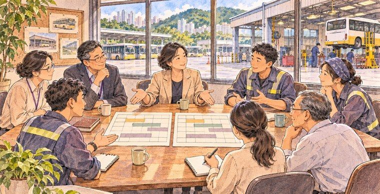

SUS-26 · 香港 · 虚构机构 · 15–20分钟 · 公正转型 · 不同时点的分配效应 · 劳动者表达与参与
更好的转型，对谁更好，又在什么时候？

就业净增减可能掩盖转型中的岗位空档
国际劳工组织的公正转型指南把环境转型与劳动者参与、技能、权利和社会保护联系起来。经济合作与发展组织关于高排放行业岗位消失的研究，关注受影响劳动者遭受的损失，而不只是整个经济体最终的就业总量。两份资料都没有说，新岗位会自动落到原岗位消失的人手上。
世界银行对煤矿关闭的回顾强调，要在岗位消失前做好准备，并在转型期间提供支持。煤炭行业与下文虚构的车队基地不同。这些资料提示我们关注分配和时点，并不提供该基地的成本、排放或就业预测。
课堂决策
虚构的课堂情境。 一个社区服务车队基地正把车队换成排放更低的车辆。两种进度方案在技术上都可行，也都能满足同一个强制环保期限，即第6个月月底。两种方案都能保障运营安全和规定的运输服务，保留法定及合同约定的劳动权益，并履行所有协商义务。目前尚未采纳任何方案，也未实施裁员。你负责为管理层和劳动者共同组成的规划小组提供建议。
快速方案在第3个月月初一次性更换整个车队；分阶段方案在同一时间更换一半，到第7个月月初再更换另一半。第6个月月末和第7个月月初是同一个切换时点，因此分阶段方案也能如期完成。从第7个月起，两种方案的车队和运营排放水平相同。两种方案的十二个月预算估算采用同一口径，均计入设备、能源、常规用工、必要培训、法定义务和行政管理费用，只不计入后文讨论的额外过渡安排。
现有的十二个燃油系统支持岗位将取消，基地将提供十二个新岗位。受影响的员工已表示对新岗位有兴趣，但具体到每个人的岗位安排和培训计划，还要与本人确认。最终人数相同，并不保证人人都能顺利转岗。强制性的资质要求和安全考核不能免除。
转型预算上限为 3.7百万港元。表中的运营温室气体排放估算采用规定的固定排放因子，以同样的前十二个月和等量运输服务为基础，计入车辆燃料使用和外购电力生产产生的排放。这些估算不涵盖全生命周期中的制造或处置影响。减少排放是可取的，但案例未给出碳的货币价值，也未给出排放与转型负担之间的权重。
| 前十二个月 | 快速方案 | 分阶段方案 |
|---|
| 转型预算（不含额外过渡安排） | 3.0百万港元 | 3.4百万港元 |
| 运营排放 | 100吨CO2e | 160吨CO2e |
| 最终可提供的新岗位 | 12 | 12 |
| 车队全部更换 | 第3个月月初 | 第7个月月初 |
你的决策你初步推荐哪种进度方案？在判断转型是否公平之前，你还需要了解哪些有关员工个人、岗位起止时间和培训的信息？
第二轮 · 多了一项资料
岗位安排表显示，六个新岗位在第3个月开始，另外六个要到第7个月才开始。后一批岗位取决于另一项设施投运安排和经认可的培训进度，无法提前。十二名员工都可以参加有经费保障的必要培训和考核，但仍需确认他们能否完成培训和考核、是否接受新岗位。新旧岗位的常规薪酬、福利、工作地点和合同约定工时相同。
按快速方案，十二个旧岗位都在第2个月结束后取消。六名员工可以直接转岗，另外六名员工则面临 长达四个月（第3–6个月）的空档，期间基地没有为他们安排有经费保障的岗位 ，只能等后一批岗位开放。按分阶段方案，对应的六个旧岗位会保留到第6个月结束，员工可以直接转岗。两种方案均已计入法定款项和通知义务；这些权益不能替代持续就业，也没有提议免除相关义务。案例不假定员工能在外部找到工作或获得替代收入。
快速方案也可加设一项已完整核算成本的过渡安排，让这六名员工在第3–6个月继续从事带薪过渡工作并参加培训，维持薪酬、福利和服务连续性。额外用工成本全包价为 每人每月25,000港元；其他培训、督导和行政管理费用都已计入基础预算。过渡工作安全且有实际用途，不会挤掉其他员工的岗位，也不会改变排放估算。员工可以提出修改意见，也可以通过代表表达诉求，不会因此受到报复。
员工代表希望方案载明带薪培训时间、已确认的转岗日期和个人参与所需的支持，并规定：如果培训或设施投运延期，每次转岗前都要进行有经费保障的审查。他们尚未同意整个方案。案例没有量化延期带来的额外成本；如果未能按期达到阶段目标，管理层必须另行争取资金并修订方案，而不能承诺用现有预算无限期提供支持。
你的决策你会推荐快速方案加过渡安排、分阶段方案，还是不加过渡安排的快速方案？请计算预算与排放之间的权衡，指出谁承担这四个月的空档，并说明你的建议需要获得员工同意的事项和应满足的审查条件。
沿着时间表看每个人的处境
最终提供十二个岗位，不能补上这六名员工四个月的就业空档。这里要算的是六名员工 × 四个月，合计 24个用工人月，而不是永久失去十二个岗位。也不能把六名员工提前转岗视为对另外六人的补偿。要问清每个人能否参加培训、是否接受新岗位、未来的工作条件如何，不能把岗位总数当成具体的安置计划。
如实核算过渡安排的成本
过渡安排的成本为 6 × 4 × 25,000港元 = HK$600,000。快速方案加过渡安排的成本为 3.6百万港元，比3.7百万港元的预算上限低100,000港元。分阶段方案成本为3.4百万港元，剩余300,000港元。不加过渡安排的快速方案成本为3.0百万港元，但会留下前述就业空档；预算较低并不能证明社会总成本也较低。
与分阶段方案相比，快速方案加过渡安排多支出200,000港元，可减少首年运营排放60吨CO2e。在这一有限的比较口径下，每多减排一吨约需3,333港元。这不是市场碳价，不是完整的成本效益比，也不是对员工福祉的货币估值。从第7个月起，两种方案的排放速率相同；不能声称往后每年都能减排60吨。
兼顾不同群体，给出建议
如果小组优先考虑尽早减少运营排放，并且有把握承担额外的200,000港元，那么快速方案加过渡安排很值得推荐。它既填补了已发现的岗位经费空档，也不推迟车辆更换。如果更看重节省这笔开支、留出更大的应急余量，分阶段方案也有充分理由，且仍能满足强制期限。案例没有提供可据以确定唯一福利最大化方案的碳价值。
不加过渡安排的快速方案满足规定的最低义务，却把过渡期的负担集中在六名员工身上。若推荐这一方案，就必须明确说明为什么要让他们承担这项负担，并提出可信的支持措施。假想中的未来绿色岗位，或其他人获得的好处，都不是实际补偿。不能把协商说成同意，也不能把合规当成完整的公平性评估。
敲定日期，让员工参与，明确如何检查
采纳方案前，应通过与员工对话，确认他们能参加带薪培训、接受适当考核并自愿接受新岗位，同时以书面形式明确薪酬、工时、岗位安排和支持措施。评估影响时，应把相关承包商和其他受影响群体纳入考虑，不能认为这十二个岗位已涵盖所有影响。案例没有提供其他影响的量化数据。
安排转型负责人和员工代表在第3个月开始前检查设施投运和培训进度，并在第7个月开始前再检查一次。除了排放，还要跟踪实际转岗情况、就业中断月数、薪酬和工作条件。如果阶段目标延期，要在商定的过渡安排到期前，把资金和支持问题提交上级处理。不能靠悄悄削减福利或必要培训，为未经批准的延期筹资。
教师说明
先让学生根据成本、排放和最终岗位数投票，再公布员工就业空档的时间表。追问哪个群体何时受益、谁必须承担这段空档。要求学生算出600,000港元的过渡安排成本，并区分雇主的这项支出与对员工个人收入损失的估算。建议要说得清楚，就必须交代放弃了什么。
与PPL-19不同，本案例讨论的是一项脱碳计划：不同群体承担的负担因转型时点而异，并非只讨论内部调岗时何时放人。所有进度安排、岗位、资格假设、成本和排放均为虚构。国际资料提供的是一般原则和行业证据，并不说明当地的劳动法律，也不保证再培训成功。讨论超出最低要求的支持措施时，仍须保障法定及其他强制性权利和安全要求。
第二轮
岗位安排表显示，六个新岗位在第3个月开始，另外六个要到第7个月才开始。后一批岗位取决于另一项设施投运安排和经认可的培训进度，无法提前。十二名员工都可以参加有经费保障的必要培训和考核，但仍需确认他们能否完成培训和考核、是否接受新岗位。新旧岗位的常规薪酬、福利、工作地点和合同约定工时相同。
按快速方案，十二个旧岗位都在第2个月结束后取消。六名员工可以直接转岗，另外六名员工则面临 长达四个月（第3–6个月）的空档，期间基地没有为他们安排有经费保障的岗位 ，只能等后一批岗位开放。按分阶段方案，对应的六个旧岗位会保留到第6个月结束，员工可以直接转岗。两种方案均已计入法定款项和通知义务；这些权益不能替代持续就业，也没有提议免除相关义务。案例不假定员工能在外部找到工作或获得替代收入。
快速方案也可加设一项已完整核算成本的过渡安排，让这六名员工在第3–6个月继续从事带薪过渡工作并参加培训，维持薪酬、福利和服务连续性。额外用工成本全包价为 每人每月25,000港元；其他培训、督导和行政管理费用都已计入基础预算。过渡工作安全且有实际用途，不会挤掉其他员工的岗位，也不会改变排放估算。员工可以提出修改意见，也可以通过代表表达诉求，不会因此受到报复。
员工代表希望方案载明带薪培训时间、已确认的转岗日期和个人参与所需的支持，并规定：如果培训或设施投运延期，每次转岗前都要进行有经费保障的审查。他们尚未同意整个方案。案例没有量化延期带来的额外成本；如果未能按期达到阶段目标，管理层必须另行争取资金并修订方案，而不能承诺用现有预算无限期提供支持。
你的决策你会推荐快速方案加过渡安排、分阶段方案，还是不加过渡安排的快速方案？请计算预算与排放之间的权衡，指出谁承担这四个月的空档，并说明你的建议需要获得员工同意的事项和应满足的审查条件。